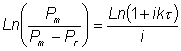

Enzyme Technology
Use of bead mills
When cell
suspensions are agitated in the presence of small steel or glass beads (usually
0.2 -.1.0 mm diameter) they are broken by the high liquid shear gradients and
collision with the beads. The rate and effectiveness of enzyme release can be
modified by changing the rates of agitation and the size of the beads, as well
as the dimensions of the equipment. Any type of biomass, filamentous or
unicellular, may be disrupted by bead milling but, in general, the larger sized
cells will be broken more readily than small bacteria. For the same volume of
beads, a large number of small beads will be more effective than a relatively
small number of larger beads because of the increased likelihood of collisions
between beads and cells.
Bead mills are available in various sizes and
configurations from the Mickle shaker which has a maximum volume of about 40 ml
to continuous process equipment capable of handling up to 200 Kg wet yeast or 20
Kg wet bacteria each hour. The bead mills that have been studied in most detail
are the Dyno-Mill and the Netsch-Molinex agitator, both of which consist of a
cylindrical vessel containing a motor-driven central shaft equipped with
impellers of different types. Both can be operated continuously, being equipped
with devices which retain the beads within the milling chamber. Glass Ballotini
or stainless steel balls are used, the size range being selected for most
effective release of the enzyme required. Thus 1 mm diameter beads are
satisfactory for the rapid release of periplasmic enzymes from yeast but 0.25 mm
diameter beads must be used, for a longer period, to release membrane-bound
enzymes from bacteria.
The kinetics of protein release from bead mills follows
the relationship given by Equation 2.9 with respect to the time (t) that a
particle spends in the mill. Unfortunately, however well designed these mills
are, when continuously operated there will be a significant amount of backmixing
which reduces the efficiency of the protein released with respect to the average
residence time (t, see the discussion concerning backmixing in reactors
in Chapter 5). This is more noticeable at low flow rates (high average residence
times) and when the proportion of protein released is high. It may be
counteracted by designing the bead mill to encourage plug flow characteristics.
Under these circumstances the relationship can be shown to be

(2.11)
where i represents the degree of
backmixing (i.e., i = 0 under ideal plug flow conditions and i = 1 for ideal
complete backmixing). Equation 2.11 reduces to give the simplified relationship
of Equation 2.9 at low (near zero) values of i.
In addition to bead size, the
protein release rate constant (k) is a function of temperature, bead loading,
impeller rotational speed and cell loading. Impeller speeds can be increased
with advantage until bead breakage becomes significant but heat generation will
also increase. At a constant impeller speed, the efficiency of the equipment
declines with throughput as the degree of backmixing increases. There will be an
optimum impeller tip speed at which the increases in disruption are balanced by
increases in backmixing.
In general, increased bead loading increases the rate of
protein release but also increases the production of heat and the power
consumption. Heat production is the major problem in the use of bead mills for
enzyme release, particularly on a large (e.g., 20 litres) scale. Smaller vessels may be
cooled adequately through cooling jackets around the bead chamber but larger
mills require cooling through the agitator shaft and impellers. However, if
cooling is effective there is little damage to the enzymes released.
Home
| Back | Next
This page was established in 2004 and last updated by Martin
Chaplin
on
6 August, 2014
|